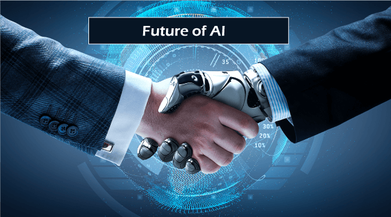
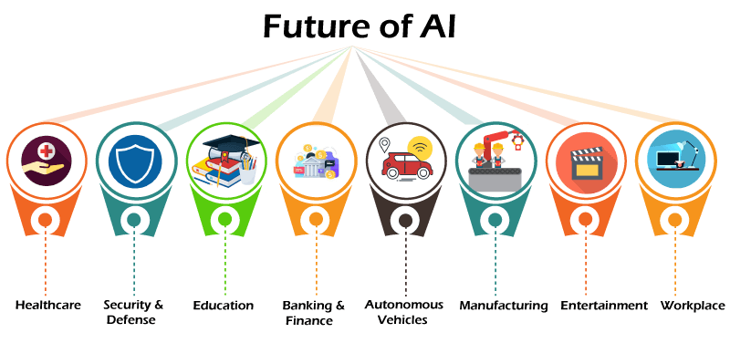
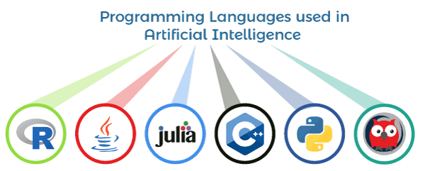

Robotics and Artificial Intelligence Robotics is a separate entity in Artificial Intelligence that helps study the creation of intelligent robots or machines. Robotics combines electrical engineering, mechanical engineering and computer science & engineering as they have mechanical construction, electrical component and programmed with programming language. Although, Robotics and Artificial Intelligence both have different objectives and applications, but most people treat robotics as a subset of Artificial Intelligence (AI). Robot machines look very similar to humans, and also, they can perform like humans, if enabled with AI.
Artificial Intelligence is defined as the branch of Computer Science & Engineering, which deals with creating intelligent machines that perform like humans. Artificial Intelligence helps to enable machines to sense, comprehend, act and learn human like activities. There are mainly 4 types of Artificial Intelligence: reactive machines, limited memory, theory of mind, and self-awareness.
Undoubtedly, Artificial Intelligence (AI) is a revolutionary field of computer science, which is ready to become the main component of various emerging technologies like big data, robotics, and IoT. It will continue to act as a technological innovator in the coming years. In just a few years, AI has become a reality from fantasy. Machines that help humans with intelligence are not just in sci-fi movies but also in the real world. At this time, we live in a world of Artificial Intelligence that was just a story though for some years.
Before going deep dive into AI in future, first, let's understand what is Artificial Intelligence and at what stage it is at present. We can define AI as, "It is the ability of machines or computer-controlled robot to perform task that are associated with intelligence." So, AI is computer science, which aims to develop intelligent machines that can mimic human behaviour. Based on capabilities, AI can be divided into three types that are: Narrow AI: It is capable of completing dedicated tasks with intelligence. The current stage of AI is narrow AI. General AI: Artificial General Intelligence or AGI defines the machines that can show human intelligence. Super AI: Super AI refers to self-aware AI with cognitive abilities that surpass that of humans. It is a level where machines can do any task that a human can do with cognitive properties.
Undoubtedly, cyber security is a priority of each organization to ensure data security. There are some predictions that cyber security with AI will have below changes: With AI tools, security incidents will be monitored. Identification of the origin of cyber-attacks with NLP. Automation of rule-based tasks and processes with the help of RPA bots. However, being a great technology, it can also be used as a threat by attackers. They can use AI in a non-ethical way by using automated attacks that may be intangible to defend
The fully autonomous vehicle is not yet developed in the transportation sector, but researchers are reaching in this field. AI and machine learning are being applied in the cockpit to help reduce workload, handle pilot stress and fatigue, and improve on-time performance. There are several challenges to the adoption of AI in transportation, especially in areas of public transportation. There's a great risk of over-dependence on automatic and autonomous systems.
Artificial Intelligence will play a vital role in the e-commerce sector shortly. It will positively impact each aspect of the e-commerce sector, ranging from user experience to marketing and distribution of products. We can expect e-commerce with automated warehouse and inventory, shopper personalization, and the use of chatbots in future.
Artificial Intelligence has become an important part of human life as we are now highly dependent on machines. Artificial Intelligence is a very important technology to develop and build new computer programs and systems, which can be used to simulate various intelligence processes like learning, reasoning, etc. Languages used in Artificial Intelligence Python R Lisp Java C++ Julia Prolog